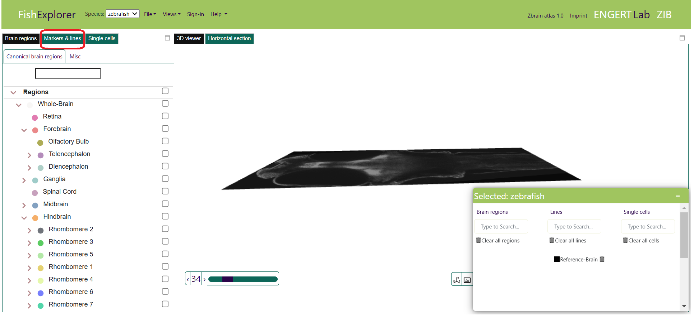
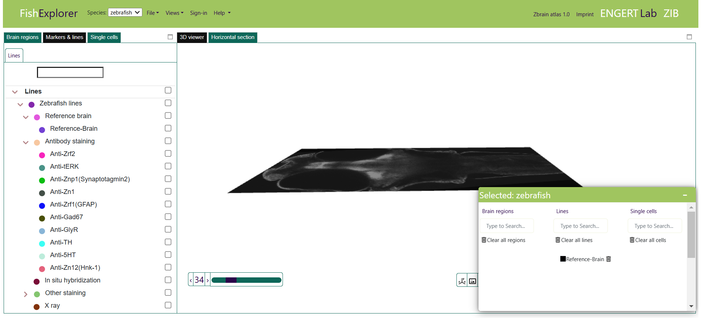
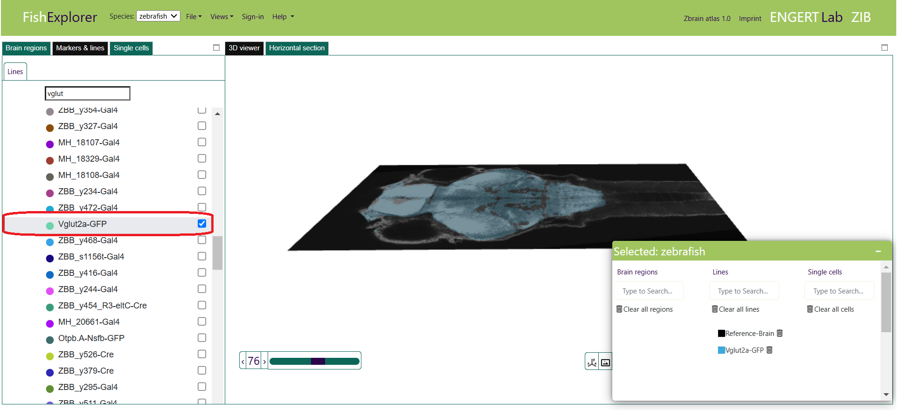
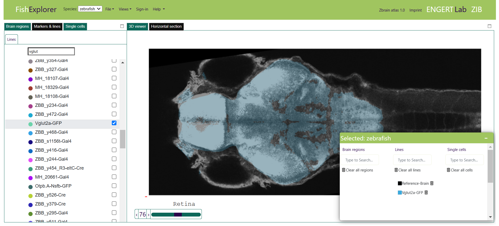
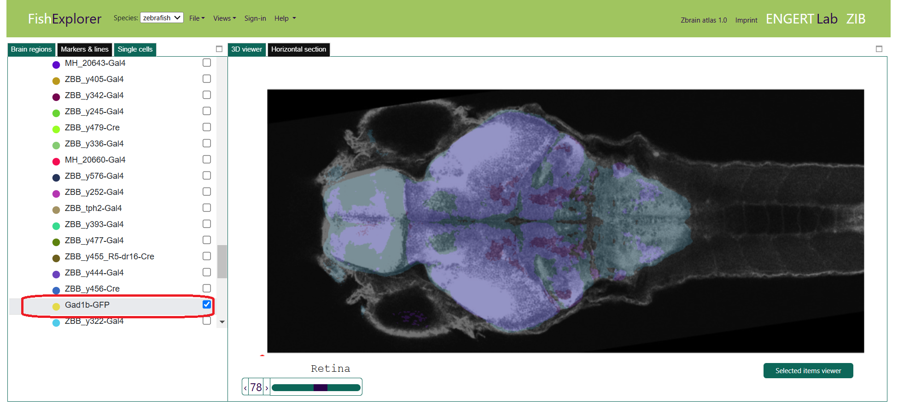

Multi-channel stacks
-
Multiple image stacks can be loaded into the FishExplorer in different color channels
and can be superimposed on the reference brain or any other 3D image dataset,
e.g. imagine that you want to superimpose the vglut stack and the gadb1 stack
on the reference brain.
If you have just started FishExplorer, you will see the image as shown below.

- Click the “Marker and lines” tab (encircled red in the image above).
As a result, you will see the hierarchical line tree shown in the image below.

- Next, select the vglut stack (encircled red in the image below).
The superimposed stack will appear in both the horizontal section and the 3D viewer.


- Next, select the gadb1 stack.
